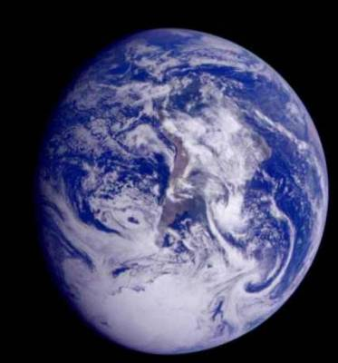

| Cette page est actuellement en cours de construction. Son auteur travaille à l'améliorer. |
| Véolia | |
|---|---|
 | |
| Statut | Capitale de la République Hellénistique Social-libéral de Véolia |
| Coordonnées | 5.10.7.2.3 |
| Surface émergée | 23% |
| Cycle annuel | 0.91 années standards |
| Cycle journalier | 23 heures standards |
| Capitale | Thèbes |
| Lunes | 1 |
| Origines des populations | citoyens véoliens 91% (dont 52% natif de Véolia), ressortissants de l'Empire de Terrafie 4.5%, ressortissants de la Technocratie 1.5%, autres ressortissants 1% et réfugiés politiques de divers Etats 2% |
| Langue officielle | Grec véolien |

Sommaire
Géographie et Climat
Véolia est une planète où à peine plus d'un cinquième des terres sont immergés. Il en résulte un climat particulièrement doux tant en hiver qu'en été. De plus, sur les 8 continent que compte la planète 6 sont compris entre 50° de latitude Nord et 50° de latitude Sud. Il en résulte une température moyenne de 22°C sur Véolia. La proximité des océans permet aux continents de recevoir une bonne part des pluies il en résulte une faible proportion de désert (6% des terres), une forte proportion de forêt équatorial (25%), ainsi que des zones assez tempérés (37%) et méditerranéen (32%).
Histoire
Ere Servile
Originaire de l'antique Terre, les Véoliens sont des Grecques issues de la cité de Thèbes enlevés par les Orocks. Les Orocks étaient des reptiles évolués à morphologie humanoïde. Les Véoliens leurs servaient d'esclaves et subissaient tout ce qu'il avait fais subir à leurs esclaves humains. Ils n'étaient plus que des objets soumis aux ordres et aux envies sexuels de leurs maitres. Atteignant son apogée en 25 ETU, l'apocalypse de 60 ETU desorganisa l'Empire Orockiens ce qui permis aux peuples Véoliens de se soulever contre les Orocks dont on décapita tout les représentants vivants. Traumatisé par cette épisode sombre, les Véoliens n'eurent de cesse que de garantir leurs libertés dans des Etats démocratiques.
Ere Antique
Face à la désorganisation complète que connu Véolia tant au niveau économique, technologique et sociale, les premières autorités politiques furent d'envergures locales. La Polis ou cité est alors l'organisation par excellence de Véolia: à fonctionnement majoritairement démocratique bien que des tyrannie se mirent en place la cité à autorité sur la ville et sa campagne environnante. La Démocratie eut un rapide succès car pour protéger la cité les tous les hommes étaient enrôlés dans la Phalange ce qui était récompensé par le droit de vote et d'être élire. Cependant les quelques cités despotiques devaient engagés de nombreux mercenaires appâtes par l'argent, ce qui les ruinèrent rapidement et provoqua la chute de leurs tyrans.
Ere médiévale
En 105 ETU, la cité de Thèbes profitant d'une position stratégique pour s'enrichir du commerce ( situé à l'embouchure du Triviano, le plus grand fleuve de Véolia, protégé par la petite île de Mayorna et faisant face à la Corne de saphire, mer séparant la Flavianie et la Polysierra ) élis au postes de Stratège Cornélius Damatto. Celui-ci nourrit de grande ambition pour sa cité et entre en guerre contre les cités voisines dès son avènement. En 112 ETU, Thèbes a conquis Pendant